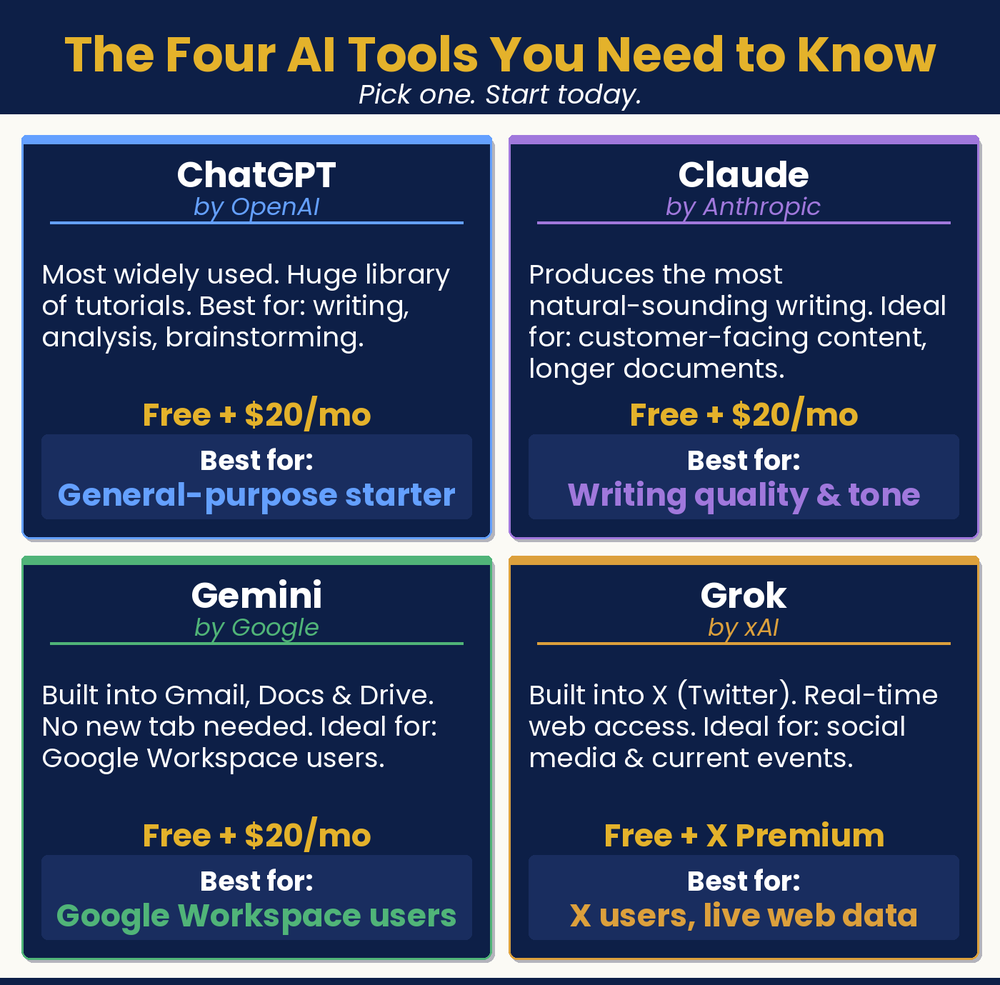

Chapter 5 — Your First AI Tool
One Tool. One Task. Right Now.
Where do I start?

Chapter Recap
Starting is the hard part, so this chapter makes it simple. Pick one tool. Try one task. Do it today. You will create a free account and send your first prompt in about fifteen minutes. You will also learn the one skill that matters most: writing a clear prompt. The more detail you give, the better the result. AI writes the first draft. You read it, fix it, and approve it before it goes out.
In This Chapter
- Picking the Right Tool
- Your First 15 Minutes
- Prompting 101: The Skill That Changes Everything
- Building Your Prompt Library
- Read and Approve Everything First
Grab-and-Go Prompts
1. Win Back a Lapsed Customer — your very first prompt; fill in the brackets
I own a [type of business] in [your city]. Write me a friendly, professional email to send to a customer who hasn’t visited in a while, inviting them to come back and letting them know about something new they might enjoy.
2. Make It Shorter and More Casual — follow-up when a draft feels too long or stiff
Make it a little shorter and more casual.
3. Add a Specific Offer — follow-up to add a promotion
Add a specific offer for 15% off their next visit.
4. A Detailed Caption (the power of context) — shows how detail changes the result
You are an Instagram marketing expert. Write an Instagram caption for my Austin bakery, Sweet Provisions. We just launched a Brown Butter and Sea Salt croissant for fall. Our followers are local food lovers who appreciate quality and craft. The tone should be warm and slightly poetic. We’re not a chain, and our posts should feel like they come from a real person who loves what they bake. End with a call to action to come in this weekend. Aim for 3–4 sentences.
5. Start With a Role — Pro Tip; improves almost any prompt
You are a marketing copywriter for a local plumbing company in Norwich, Connecticut. [then your request]
6. Write a Review Response — a great first task
Write a warm, professional response to a positive Google review for my [business type]. Keep it genuine and under 75 words.
7. Three Instagram Captions — three tones at once
Write three Instagram captions for a [business type] promoting [your current offer or season]. Give me one professional, one casual, and one fun.
8. FAQ Answer — for your website, chatbot, or bio
Write an FAQ answer for the most common question customers ask about my [business type].
Download
- 📄 First-Week Prompt Library — tested prompts to get you started fast, organized by business task.
Your Move
Try three prompts today and save the best result from each. Prompt 1: “Write a warm, professional response to a positive Google review for my [business type]. Keep it genuine and under 75 words.” Prompt 2: “Write three Instagram captions for a [business type] promoting [your current offer or season]. Give me one professional, one casual, and one fun.” Prompt 3: “Write an FAQ answer for the most common question customers ask about my [business type].” Save the results. That’s the beginning of your prompt library.

Read the full chapter in
AI Jiu-Jitsu: Run Circles Around the Big Guys, the book this toolbox comes from.
Prefer to have it set up for you? BreakThru Growth offers AI coaching and done-for-you setup for small businesses → BreakThruGrowth.com